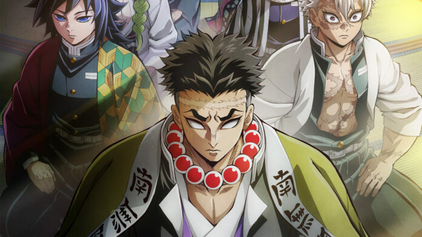
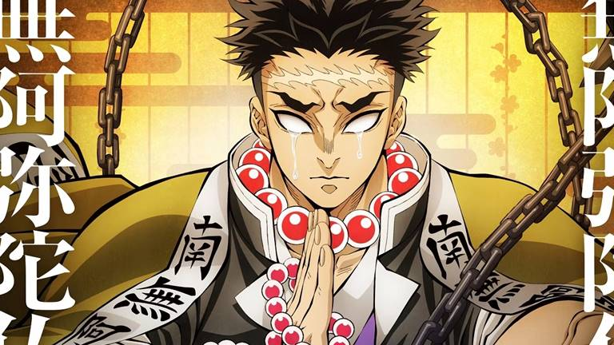
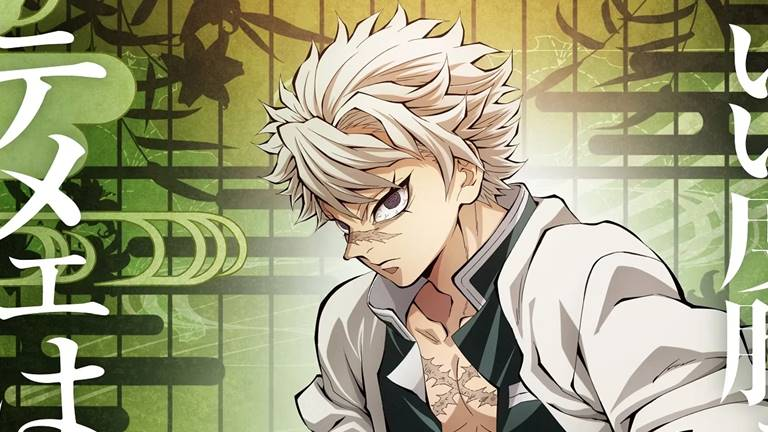
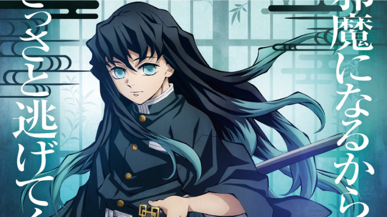
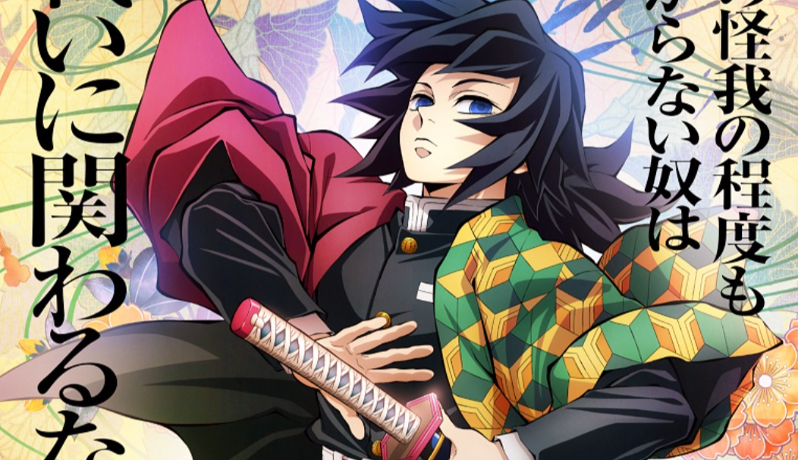
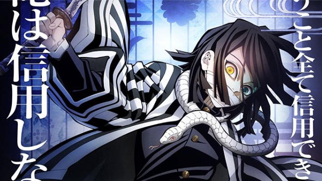
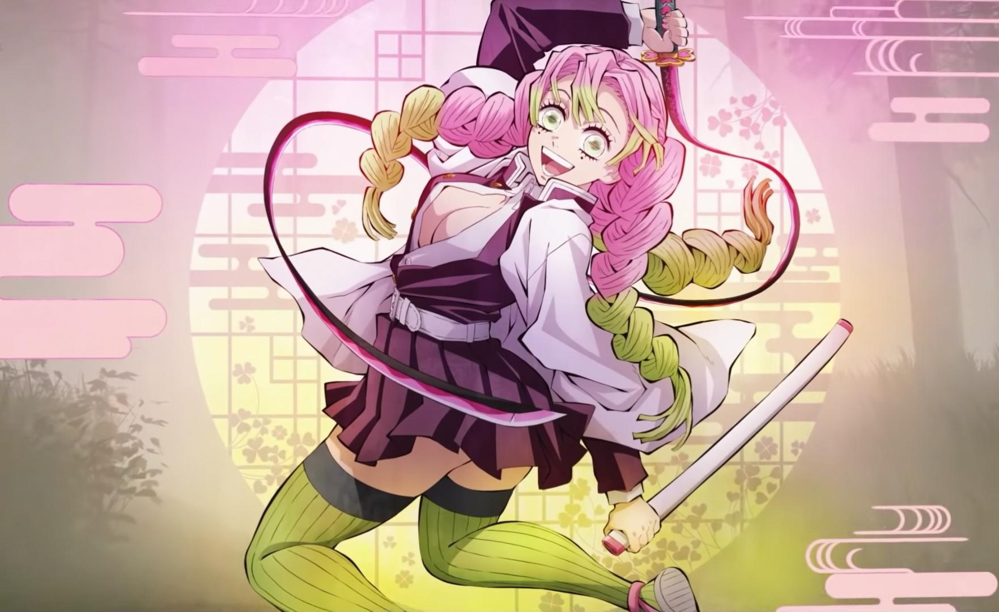
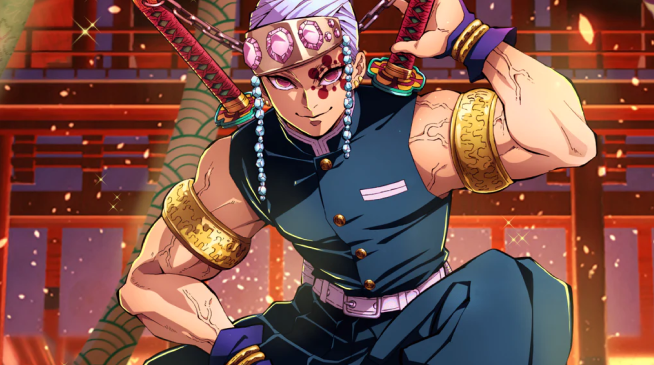
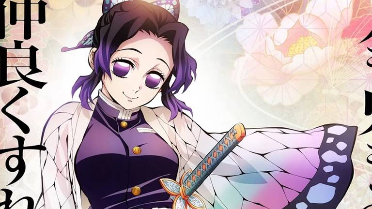

Revelados os Segredos: Ranking dos Hashiras de Demon Slayer!
Os Hashiras de Kimetsu no Yaiba são os espadachins mais poderosos da Demon Slayer Corps. Nesta notícia, exploraremos o ranking dos Hashiras, destacando suas habilidades, personalidades e importância na história. Prepare-se para uma emocionante viagem pelo universo de Kimetsu no Yaiba!
Gyomei Himejima
Hashira da Pedra: Considerado o mais forte dos Hashiras, Gyomei é uma figura imponente com habilidades excepcionais em combate e uma personalidade calma e emotiva. Ele é capaz de usar a Respiração da Pedra no nível 5.
Sanemi Shinazugawa
Hashira do Vento: Sanemi é conhecido por sua habilidade com a espada e alcançou o nível 8 da Respiração do Vento. Ele tem uma personalidade forte e é um dos Hashiras mais habilidosos.
Muichiro Tokito
Hashira da Névoa: Apesar de sua juventude, Muichiro é extremamente poderoso e já alcançou o estilo 7 da Respiração da Névoa, sendo temido pelos demônios.
Giyu Tomioka
Hashira da Água: Giyu é um espadachim notável que usa a técnica de Respiração da Água, capaz de manipular a água para tornar seus ataques mais letais. Ele desenvolveu a 11ª forma dessa técnica.
Obanai Iguro
Hashira da Serpente: Obanai é habilidoso e alcançou o nível 5 do sopro da Serpente. Ele tem uma personalidade complexa e é apaixonado por Mitsuri.
Mitsuri Kanroji,
Hashira do Amor: Ela é conhecida por sua força incomum, que vem de uma composição muscular única, e por sua personalidade emotiva e apaixonada. Mitsuri utiliza o Estilo de Respiração do Amor em combate
Kyojuro Rengoku

Hashira das Chamas: Kyojuro é dedicado e bondoso, com um coração grande. Ele usa a Respiração das Chamas e é conhecido por proteger os mais fracos.
Tengen Uzui
Hashira do Som: Tengen é carismático e engraçado, conhecido por sua habilidade em combate e por usar a Respiração do Som.
Shinobu Kocho
Hashira dos Insetos: Shinobu é ágil e forte, com habilidades em envenenar demônios. Ela é uma figura central na formação de caçadores de demônios e tem uma personalidade astuta.